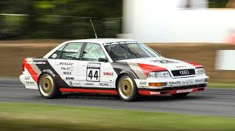
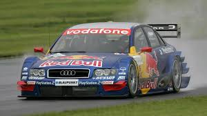
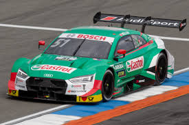

Historia en el DTM
Audi llegó al DTM con una propuesta radicalmente diferente: la tracción a las cuatro ruedas. En 1990, el V8 quattro debutó causando sensación y ganando el campeonato en sus dos primeras temporadas. Mientras el resto del paddock usaba tracción trasera, Audi apostó por su conocimiento del quattro, nacido en los rallys del Campeonato del Mundo.
Tras una larga ausencia, la marca regresó en 2004 con el Audi A4 DTM, un monoplaza disfrazado de turismo con motor V8 atmosférico de 4,0 litros y casi 470 CV. El resultado fue inmediato: Mattias Ekström se proclamó campeón en su primer año. El sueco repetiría título en 2007, y Timo Scheider lograría un doblete histórico en 2008 y 2009.
En 2012 llegó el A5 DTM y después el RS 5 DTM, completando una saga que cerró en 2014 cuando Audi decidió reorientar sus esfuerzos hacia el WEC y la Fórmula E. Los cuatro aros dejaron un palmarés que difícilmente será igualado.
Coches

Audi V8 Quattro
1990 – 1992El revolucionario V8 quattro fue el primer coche con tracción a las cuatro ruedas en ganar el DTM. Con un motor V8 de 3,6 litros (luego 4,2 l), era más pesado que sus rivales pero su tracción superior en mojado y en las salidas marcó la diferencia. Ganó en 1990 con Emanuele Pirro y en 1991 con Frank Biela.

Audi A4 DTM
2004 – 2011Chasis tubular, carrocería de materiales compuestos y un V8 de 4,0 litros con cerca de 470 CV. La tracción trasera y el cambio secuencial de seis marchas lo convertían en un instrumento preciso y devastador. Ekström (2004, 2007), Scheider (2008, 2009) y Tomczyk (2011) conquistaron el campeonato con él.

Audi RS 5 DTM
2013 – 2014La última evolución de Audi adoptó el motor V8 de 4,0 litros estandarizado. El RS 5 destacó por su aerodinámica agresiva y su excelente balance. Mike Rockenfeller fue el último campeón con el rombo, cerrando en 2013 un capítulo dorado de la historia de Audi en el automovilismo de turismos.
Pilotos Destacados
Mattias Ekström
Campeón DTM 2004 · 2007
El sueco de Falun es el piloto más laureado de Audi en el DTM. Metódico, rápido y enormemente consistente, ganó dos campeonatos con el A4 DTM y acumuló victorias durante más de una década como referente del equipo.
Timo Scheider
Campeón DTM 2008 · 2009
El alemán de Dortmund fue el piloto de cabecera de Audi durante el período más dominante de la marca. Su doble campeonato consecutivo con el A4 DTM lo convirtió en una leyenda de la categoría.
Emanuele Pirro
Campeón DTM 1990
El italiano fue el primero en llevar a Audi a lo más alto del DTM, en 1990, cuando nadie daba un céntimo por el novedoso V8 quattro. Demostró que táctica y precisión pueden derrotar a la pura potencia.
Mike Rockenfeller
Campeón DTM 2013
El último campeón de Audi en el DTM. "Rocky" combinó velocidad pura con gran experiencia en resistencia —ganador de Le Mans 2010—. Con el RS 5 DTM, llevó al equipo a su último título antes de la retirada.